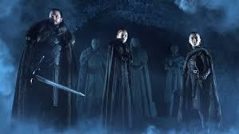
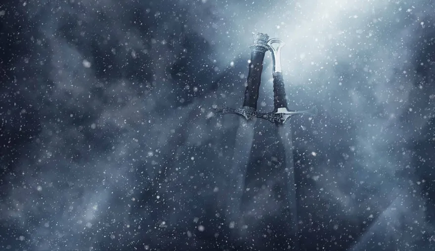

Executive Summary
Posted on 13 March, 2021 by Eqra Khattak & Laraib Noor | Based on the HBO's show GAME OF THRONES directed by D&D.
Game Concept

The game Game of Winter is based on the show Game Of Thrones. Game of Thrones is an HBO series that tells the story of a medieval country's civil war. When the story begins, a decade-long summer is ending, and winter looms as characters battle to claim the "Iron Throne," the seat of the king of the Seven Kingdoms, the regime that rules all but the northern tip of Westeros. Every character has different story and they faced different challenges.
Game of Winter basically tells and shows the lives of different characters in Game of Thrones and depicts the challenges that they faced as game levels. The player selects the character, from the menu, he wants to play as. the game starts from the beggining of the character's life in the show. A story line with levels based on challenges each time harder than the one before according to the GOT Series.
In this version of the game, we will be taking things slow and only integrate 2 main characters and their lives from the series. Daenerys Targaryen and Jon Snow. The players will play to their death (in Dany's case) or banishment (in John's case) as in the series.
As Queen Cersei says in season one, "When you play the game of thrones, you win or you die. There is no middle ground."
Genre

GOT is about what happens when 7 kingdoms/players play the GAME OF THRONES.
It's a not easy to describe GOT, other than to say it's awesome. It's a fantasy world which has action, adventure, thriller, suspense, politics. It has everything, from sex/nudity to heads being crushed/burned/decapitated, from witty acerbic humor, about love and about revenge, and any thing else u can think about.
The show is a must watch and is filled with action, suspense, conspiracy theories, betrayal,lust for power.The show is basically about seven noble families fighting over the land of Westeros. Everything in that show is perfect. It almost covers every genre.
Game of Winter is based on the same genres, apart from the nudity and drama, we plan to integrate action, horror, blood, humor, conspiracy, adventure suspense, thrill etc.
Target Audience

Game of Thrones is set in the medieval times in a world of fantasy and magic, the show contains war, dragons, witches, politics as a wide universe of characters plot to take the throne for the king. It's history fiction so people interested in this genre are most interested in the show.
The target audience of this game are the viewers of the series and the book readers A Song Of Ice And Fire by George R. R. Martin. As the book and the series game of thrones had a massive following and would be keen to watch and play the series adaption. Another audience would be fans of Lord of the rings with the fantasy elements and both being great books then adapted to film/series.
The main audience are the fans/stans of the series Game of Thrones.
Project Scope
Overall Description of the work
The Game of Winter is about living the lives of Game of Thrones characters as a game play with real challenges faced by them in the show as game levels.
A player can choose which character he wants to be for the rest of the game and lives through them for thier life span in the story line facing all the challenges the character faced in the series.
Deliverables
Watching GOT and reading the ASOIAF books has been fun. But this game will produce a platform for stans to introduce the thrill of first hand expercience, playing as the character himself.
This project has a set of deliverables:
- Game Design Document
- Design review
- Progress report
- Fast response time
- New knowledge and experience
- Web page
- Product prototype
- Complete game
Justification of the Project
This project was initiated by a stan for all the stans to create the aura of fullfillment and satisifaction of being in the character's shoes they so admire and making thier decisions for the best outcome and survival.
Constraints
Due to shortage of time and budget, it would not be possible to organize a complete gameplay for each of the main character in the series. Therefore, we would only be laying out the life of 2 of the main characters: Dany and John.
Assumptions
- The players have an idea of the characters' lives in the series.
- The developer has a sound knowledge of Unity
- It can somtimes get violent, so the audience must be able to handle such scenes
Inclusions/Exclusions
The project will include 2 characters each with their own life and gameplay. Other side characters will be included in the gameplay for the asthetic experience and emotion. Moreover, the game will include violence and thrill.
The game will not include nudity as in the series.
Sources
https://en.m.wikipedia.org/wiki/Game_of_Thrones
https://www.quora.com/What-is-the-genre-of-Game-Of-Thrones-TV-series
https://www.vox.com/2018/7/11/17562192/game-of-thrones-season-4-explainer
https://vocal.media/geeks/how-the-target-audience-of-game-of-thrones-has-changed
https://www.wrike.com/blog/what-game-of-thrones-house-is-your-project-management-style/
Menu